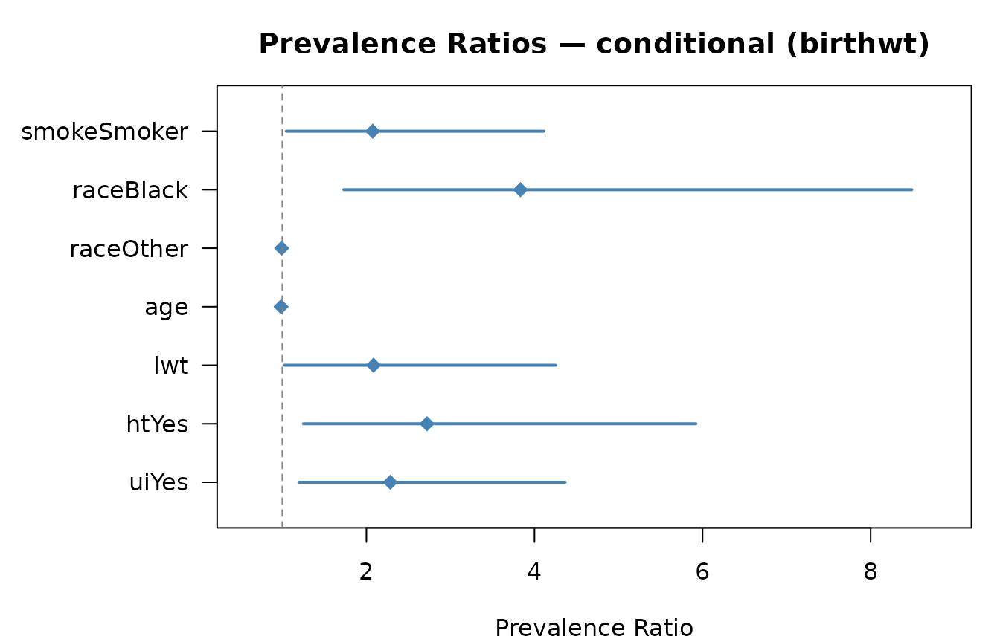

Estimating Prevalence Ratios with prLogistic
Leila D. Amorim & Raydonal Ospina
2026-06-05
Source:vignettes/prLogistic-intro.Rmd
prLogistic-intro.RmdIntroduction
In cross-sectional epidemiological studies, the prevalence ratio (PR) is often the measure of association of interest. When logistic regression is used to adjust for confounders, the model directly yields odds ratios (OR), not PRs. Although OR approximates PR when the outcome is rare (< 10%), the approximation breaks down for common outcomes and can substantially overestimate the strength of the association (Zhang and Yu 1998).
The prLogistic package estimates adjusted PRs — and their confidence intervals — directly from logistic regression models, using two standardisation procedures (Wilcosky and Chambless 1985; Amorim and Ospina 2021):
- Conditional standardisation: PR at fixed covariate values (reference profile).
- Marginal standardisation: population-averaged PR over the observed covariate distribution.
Both procedures support four model types:
| Function | Model class | Package | Use case |
|---|---|---|---|
prLogisticDelta() |
glm |
stats | Independent observations |
prLogisticDelta() |
glmerMod |
lme4 | Clustered / multilevel data |
prLogisticGEE() |
geeglm |
geepack | Longitudinal / GEE |
prLogisticSurvey() |
svyglm |
survey | Complex survey designs |
Installation
# CRAN (stable)
install.packages("prLogistic")
# Development version (GitHub)
# install.packages("remotes")
remotes::install_github("Raydonal/prLogistic")Independent observations — glm
Data
We use the birthwt dataset from the
MASS package, a retrospective study of risk factors for
low birth weight (n = 189).
data(birthwt, package = "MASS")
# Recode predictors
birthwt$smoke <- factor(birthwt$smoke, labels = c("Non-smoker", "Smoker"))
birthwt$race <- factor(birthwt$race,
labels = c("White", "Black", "Other"))
birthwt$ht <- factor(birthwt$ht, labels = c("No", "Yes"))
birthwt$ui <- factor(birthwt$ui, labels = c("No", "Yes"))
# Outcome prevalence
mean(birthwt$low) # 31 % — common outcome, OR is a poor approximation
#> [1] 0.3121693Fitting the model
fit_glm <- glm(low ~ smoke + race + age + lwt + ht + ui,
family = binomial, data = birthwt)Delta method — conditional standardisation
Reference profile: binary predictors at 0 (reference category),
continuous predictors (age, lwt) at their
sample medians.
res_cond <- prLogisticDelta(fit_glm, standardisation = "conditional")
res_cond
#>
#> Prevalence Ratio Estimation via Logistic Regression
#> ----------------------------------------------------
#> Model : glm
#> Method : delta
#> Standardis. : conditional
#> Conf. level : 95%
#> ----------------------------------------------------
#>
#> Estimate 2.5% 97.5%
#> smokeSmoker 2.2850 1.1962 4.3649
#> raceBlack 2.7207 1.2501 5.9211
#> raceOther 2.0850 1.0226 4.2513
#> age 0.9851 0.9343 1.0386
#> lwt 0.9919 0.9888 0.9951
#> htYes 3.8333 1.7309 8.4890
#> uiYes 2.0750 1.0469 4.1128Delta method — marginal standardisation
res_marg <- prLogisticDelta(fit_glm, standardisation = "marginal")
res_marg
#>
#> Prevalence Ratio Estimation via Logistic Regression
#> ----------------------------------------------------
#> Model : glm
#> Method : delta
#> Standardis. : marginal
#> Conf. level : 95%
#> ----------------------------------------------------
#>
#> Estimate 2.5% 97.5%
#> smokeSmoker 1.8081 1.0865 3.0089
#> raceBlack 1.8978 1.1098 3.2451
#> raceOther 1.6507 0.9518 2.8630
#> age 0.9907 0.9550 1.0277
#> lwt 0.9961 0.9945 0.9977
#> htYes 2.2957 1.3656 3.8594
#> uiYes 1.6242 0.9791 2.6943Custom reference values
Use ref_values to fix continuous predictors at
clinically meaningful values (e.g., a 25-year-old woman weighing 55
kg):
prLogisticDelta(fit_glm,
standardisation = "conditional",
ref_values = list(age = 25, lwt = 55))
#>
#> Prevalence Ratio Estimation via Logistic Regression
#> ----------------------------------------------------
#> Model : glm
#> Method : delta
#> Standardis. : conditional
#> Conf. level : 95%
#> ----------------------------------------------------
#>
#> Estimate 2.5% 97.5%
#> smokeSmoker 1.8466 1.0437 3.2671
#> raceBlack 2.0644 1.1328 3.7622
#> raceOther 1.7369 0.9439 3.1959
#> age 0.9888 0.9534 1.0256
#> lwt 0.9918 0.9886 0.9949
#> htYes 2.5162 1.3726 4.6126
#> uiYes 1.7312 0.9970 3.0061Forest plot
plot(res_cond, main = "Prevalence Ratios — conditional (birthwt)")
Forest plot: conditional PR estimates with 95% CI
Bootstrap confidence intervals
Bootstrap is recommended as a sensitivity check, especially with small samples.
set.seed(2024)
res_boot_c <- prLogisticBootCond(fit_glm, data = birthwt, R = 999)
#> Warning in .check_pr_range(PR, nms): Unusual PR estimate(s) detected for:
#> htYes. Check model convergence and predictor coding.
#> Warning in .check_pr_range(PR, nms): Unusual PR estimate(s) detected for:
#> htYes. Check model convergence and predictor coding.
#> Warning in .check_pr_range(PR, nms): Unusual PR estimate(s) detected for:
#> raceBlack. Check model convergence and predictor coding.
#> Warning in .check_pr_range(PR, nms): Unusual PR estimate(s) detected for:
#> raceOther. Check model convergence and predictor coding.
#> Warning in .check_pr_range(PR, nms): Unusual PR estimate(s) detected for:
#> htYes. Check model convergence and predictor coding.
#> Warning in .check_pr_range(PR, nms): Unusual PR estimate(s) detected for:
#> htYes. Check model convergence and predictor coding.
#> Warning in .check_pr_range(PR, nms): Unusual PR estimate(s) detected for:
#> htYes. Check model convergence and predictor coding.
#> Warning in .check_pr_range(PR, nms): Unusual PR estimate(s) detected for:
#> htYes. Check model convergence and predictor coding.
#> Warning in .check_pr_range(PR, nms): Unusual PR estimate(s) detected for:
#> htYes. Check model convergence and predictor coding.
#> Warning in .check_pr_range(PR, nms): Unusual PR estimate(s) detected for:
#> htYes. Check model convergence and predictor coding.
#> Warning in .check_pr_range(PR, nms): Unusual PR estimate(s) detected for:
#> htYes. Check model convergence and predictor coding.
#> Warning in .check_pr_range(PR, nms): Unusual PR estimate(s) detected for:
#> htYes. Check model convergence and predictor coding.
#> Warning in .check_pr_range(PR, nms): Unusual PR estimate(s) detected for:
#> raceBlack, htYes. Check model convergence and predictor coding.
#> Warning in .check_pr_range(PR, nms): Unusual PR estimate(s) detected for:
#> htYes. Check model convergence and predictor coding.
#> Warning in .check_pr_range(PR, nms): Unusual PR estimate(s) detected for:
#> htYes. Check model convergence and predictor coding.
res_boot_c
#>
#> Prevalence Ratio Estimation via Logistic Regression
#> ----------------------------------------------------
#> Model : glm
#> Method : bootstrap
#> Standardis. : conditional
#> Conf. level : 95%
#> ----------------------------------------------------
#>
#> Estimate Normal CI Percentile CI
#> Estimate Normal.2.5% Normal.97.5% Pct.2.5% Pct.97.5%
#> smokeSmoker 2.2850 0.0074 4.0555 1.2329 5.0241
#> raceBlack 2.7207 0.0000 5.1920 1.2408 6.5234
#> raceOther 2.0850 0.0000 4.0217 1.0839 5.2927
#> age 0.9851 0.9299 1.0323 0.9548 1.0497
#> lwt 0.9919 0.9861 0.9955 0.9887 0.9981
#> htYes 3.8333 0.0000 7.1739 1.4520 9.3307
#> uiYes 2.0750 0.0019 3.7862 0.9178 4.6696Extract a specific CI type:
# Percentile intervals
confint(res_boot_c, type = "percentile")
#> Pct.2.5% Pct.97.5%
#> smokeSmoker 1.2328686 5.0241441
#> raceBlack 1.2407625 6.5234458
#> raceOther 1.0839370 5.2926802
#> age 0.9547745 1.0496702
#> lwt 0.9886779 0.9981012
#> htYes 1.4519882 9.3306514
#> uiYes 0.9178313 4.6695593Clustered / multilevel data — glmer (lme4)
library(lme4)
#> Loading required package: Matrix
# Treat race as a clustering variable (illustrative)
fit_glmer <- glmer(low ~ smoke + age + lwt + ht + (1 | race),
family = binomial, data = birthwt)
prLogisticDelta(fit_glmer, standardisation = "marginal")
#>
#> Prevalence Ratio Estimation via Logistic Regression
#> ----------------------------------------------------
#> Model : glmer
#> Method : delta
#> Standardis. : marginal
#> Conf. level : 95%
#> ----------------------------------------------------
#>
#> Estimate 2.5% 97.5%
#> smokeSmoker 1.7531 1.0756 2.8572
#> age 0.9871 0.9599 1.0151
#> lwt 0.9965 0.9942 0.9988
#> htYes 2.2071 1.3152 3.7039The random effect (1 | race) accounts for unobserved
between-group heterogeneity. Fixed-effect coefficients — and hence PRs —
are conditional on the random effects.
Longitudinal data — GEE via geepack
GEE models yield population-averaged estimates and
naturally accommodate within-subject correlation. The
prLogisticGEE() wrapper sets marginal as the
default standardisation.
library(geepack)
data(ohio, package = "geepack")
# Respiratory symptoms in children (4 repeated measures per child)
fit_gee <- geeglm(resp ~ smoke + age,
family = binomial,
id = id,
corstr = "exchangeable",
data = ohio)
prLogisticGEE(fit_gee)
#>
#> Prevalence Ratio Estimation via Logistic Regression
#> ----------------------------------------------------
#> Model : geeglm
#> Method : delta
#> Standardis. : marginal
#> Conf. level : 95%
#> ----------------------------------------------------
#>
#> Estimate 2.5% 97.5%
#> smoke 1.2499 0.9332 1.6742
#> age 0.9070 0.8410 0.9782The robust sandwich variance from vcov(fit_gee) is used
automatically, providing valid inference even if the working correlation
structure is misspecified.
Complex survey data — svyglm (survey)
library(survey)
#> Loading required package: grid
#> Loading required package: survival
#>
#> Attaching package: 'survey'
#> The following object is masked from 'package:graphics':
#>
#> dotchart
data(api, package = "survey")
apiclus2$target_met <- as.numeric(apiclus2$sch.wide == "Yes")
# Two-stage cluster sample
dclus2 <- svydesign(id = ~dnum + snum,
fpc = ~fpc1 + fpc2,
data = apiclus2)
fit_svy <- svyglm(target_met ~ meals + stype,
design = dclus2,
family = quasibinomial)
prLogisticSurvey(fit_svy, standardisation = "conditional")
#>
#> Prevalence Ratio Estimation via Logistic Regression
#> ----------------------------------------------------
#> Model : svyglm
#> Method : delta
#> Standardis. : conditional
#> Conf. level : 95%
#> ----------------------------------------------------
#>
#> Estimate 2.5% 97.5%
#> meals 0.9996 0.9989 1.0003
#> stypeH 0.1491 0.0505 0.4403
#> stypeM 0.6616 0.4246 1.0310Design-consistent (sandwich) standard errors are incorporated
automatically through the vcov() method for
svyglm objects.
Comparing OR and PR
The odds ratio overestimates PR when the outcome is common. The table
below illustrates this for the smoking predictor in the
birthwt example:
OR <- exp(coef(fit_glm)["smokeSmoker"])
PR <- coef(res_cond)["smokeSmoker"]
data.frame(
Measure = c("Odds Ratio (logistic)", "Prevalence Ratio (conditional)",
"Prevalence Ratio (marginal)"),
Estimate = round(c(OR, PR, coef(res_marg)["smokeSmoker"]), 3)
)
#> Measure Estimate
#> 1 Odds Ratio (logistic) 2.794
#> 2 Prevalence Ratio (conditional) 2.285
#> 3 Prevalence Ratio (marginal) 1.808With a 31% baseline prevalence the OR (2.79) substantially overstates the PR (2.29).
Methodological notes
Session information
sessionInfo()
#> R version 4.6.0 (2026-04-24)
#> Platform: x86_64-pc-linux-gnu
#> Running under: Ubuntu 24.04.4 LTS
#>
#> Matrix products: default
#> BLAS: /usr/lib/x86_64-linux-gnu/openblas-pthread/libblas.so.3
#> LAPACK: /usr/lib/x86_64-linux-gnu/openblas-pthread/libopenblasp-r0.3.26.so; LAPACK version 3.12.0
#>
#> locale:
#> [1] LC_CTYPE=C.UTF-8 LC_NUMERIC=C LC_TIME=C.UTF-8
#> [4] LC_COLLATE=C.UTF-8 LC_MONETARY=C.UTF-8 LC_MESSAGES=C.UTF-8
#> [7] LC_PAPER=C.UTF-8 LC_NAME=C LC_ADDRESS=C
#> [10] LC_TELEPHONE=C LC_MEASUREMENT=C.UTF-8 LC_IDENTIFICATION=C
#>
#> time zone: UTC
#> tzcode source: system (glibc)
#>
#> attached base packages:
#> [1] grid stats graphics grDevices utils datasets methods
#> [8] base
#>
#> other attached packages:
#> [1] survey_4.5 survival_3.8-6 geepack_1.3.13 lme4_2.0-1
#> [5] Matrix_1.7-5 prLogistic_2.0.0
#>
#> loaded via a namespace (and not attached):
#> [1] sass_0.4.10 generics_0.1.4 tidyr_1.3.2 lattice_0.22-9
#> [5] digest_0.6.39 magrittr_2.0.5 evaluate_1.0.5 fastmap_1.2.0
#> [9] jsonlite_2.0.0 backports_1.5.1 DBI_1.3.0 purrr_1.2.2
#> [13] codetools_0.2-20 textshaping_1.0.5 jquerylib_0.1.4 reformulas_0.4.4
#> [17] Rdpack_2.6.6 cli_3.6.6 mitools_2.4 rlang_1.2.0
#> [21] rbibutils_2.4.1 splines_4.6.0 cachem_1.1.0 yaml_2.3.12
#> [25] tools_4.6.0 nloptr_2.2.1 minqa_1.2.8 dplyr_1.2.1
#> [29] boot_1.3-32 broom_1.0.13 vctrs_0.7.3 R6_2.6.1
#> [33] lifecycle_1.0.5 fs_2.1.0 MASS_7.3-65 ragg_1.5.2
#> [37] pkgconfig_2.0.3 desc_1.4.3 pkgdown_2.2.0 pillar_1.11.1
#> [41] bslib_0.11.0 glue_1.8.1 Rcpp_1.1.1-1.1 systemfonts_1.3.2
#> [45] xfun_0.58 tibble_3.3.1 tidyselect_1.2.1 knitr_1.51
#> [49] htmltools_0.5.9 nlme_3.1-169 rmarkdown_2.31 compiler_4.6.0